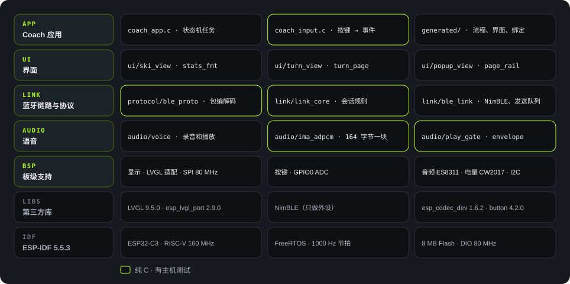
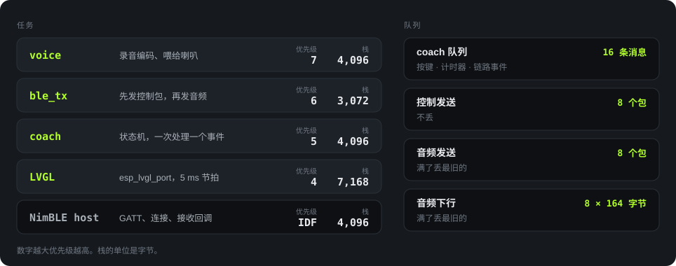

简体中文 · English
Firmware
固件架构
固件跑在 ESP32-C3 上，基于 ESP-IDF 5.5.3 和 FreeRTOS。代码在 Firmware/ 下：应用在 main/，板级支持在 components/bsp/。
来源：Firmware/flows/coach.flow.json（状态和转移）；wc -l（行数，含 BSP）；Firmware/tests/。
分层

设计原则有两条：
- 逻辑和硬件分开。 状态机、按键映射、协议编解码、会话规则、ADPCM 都写成纯 C，在电脑上就能测。
- 画布在构建时编译成 C。 状态机画在
coach.flow.json里，flowc.py把它翻译成 C 转移表。设备上没有图解释器，运行时开销为零（tools/flow/flowc.py文件头）。
| 模块 | 路径 | 行数 | 职责 |
|---|---|---|---|
| 应用 | main/main.c、coach_app.c、coach_input.c |
927 | 启动；在一个任务里跑状态机；把按键转成事件 |
| 生成代码 | main/generated/ |
1,486 | 转移表、界面构建、数据绑定、界面效果。不要手改 |
| 界面 | main/ui/ |
746 | 实时数据、弯型、弹窗、页面导轨（D-33）等界面组件 |
| 链路与协议 | main/link/、main/protocol/ |
1,824 | 07 号协议的包、握手和会话规则、NimBLE GATT |
| 语音 | main/audio/ |
450 | 录音编码、播放启动规则、音量包络、ADPCM |
| BSP | components/bsp/src/ |
1,646 | 屏幕、LVGL 适配、按键 ADC、ES8311、电量计、I2C |
| BSP 参考 | main/demo_*.c 等 |
1,521 | 上游演示程序。保留作参考，链接时被去掉 |
启动顺序
来源：main/main.c
任务和队列

main/audio/voice.c:20-23、main/link/ble_link.c:27-32、main/coach_app.c:50-52、esp_lvgl_port 默认配置、sdkconfig。优先级这样排的原因：
- voice 最高（7）。 音频每 20 ms 一块，晚了就会断音（
voice.c:23注释）。 - ble_tx 其次（6）。 先发控制包，再发音频包。
- coach 是 5。 按键、计时器、链路事件都进同一个队列，所以状态机一次只处理一个事件，没有并发问题。
- LVGL 是 4。 画屏可以让路给音频和蓝牙。
每个队列大小固定，溢出规则写死。链路慢的时候不扩大队列（需求文件夹/02-architecture.zh_CN.md 第 5 节）。
状态机
10 个状态，83 条转移，全部由 flowc.py 从 coach.flow.json 生成到 main/generated/coach_flow.c。
| 组 | 状态 | 说明 |
|---|---|---|
| 页面 | LIVE、REPORT、TURNS |
实时数据、报告、弯型。短按 UP/DOWN 循环 |
| 教练 | READY、CAPTURE、WAIT_ANSWER、PLAYBACK |
就绪、录音、等回答、播放 |
| 弹窗 | POPUP_WAIT、POPUP_PLAY、POPUP_HOLD |
等语音、播语音、10 秒倒计时 |
两个计时器（docs/heygo-changes.zh_CN.md 第 6 节）：
CAPTURE状态 20 秒后产生CAPTURE_LIMIT，录音最长 20 秒。WAIT_ANSWER状态 10 秒后产生AGENT_TIMEOUT。
同一时间只存在一个界面。切换时先载入空白界面，删掉旧界面，再建新界面，因为几个界面同时存在会超出 LVGL 内存池。
页面导轨是例外：它是 LVGL 顶层上的一个对象，自己画出四个格子和滑块，换界面时不删除。所以导轨在每个页面上只占内存池里的一个对象（main/ui/page_rail.h、coach_app.c:749）。
音频通路
麦克风 → 手机
ES8311 以 16 kHz、16 bit 采样 → voice 任务每 20 ms 编码成一块 164 字节的 ADPCM → 音频发送队列（8 包，满了丢最旧的）→ ble_tx → NimBLE 通知。
手机 → 喇叭
NimBLE 收包 → link_core 检查 xid，只收当前流 → 下行队列（8 块）→ play_gate 判断何时起播 → 解码 → I2S → ES8311 → 喇叭。
一个 20 秒的问题如果存成裸 PCM，需要 640,000 字节。设备没有 PSRAM，所以录音边录边发，不存整段（02-architecture.zh_CN.md 第 5 节）。